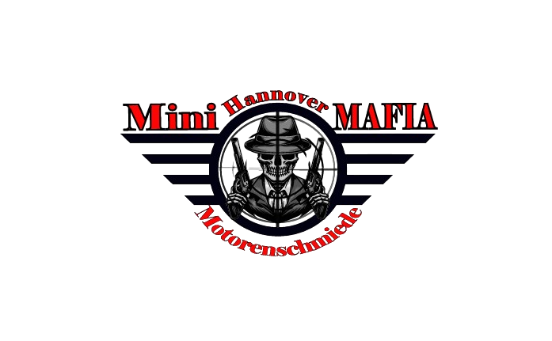

Motorrevision
Zerlegung, Reinigung, Prüfung und Neuaufbau des Motors mit individuell festgelegtem Arbeitsumfang.

MOTORENSCHMIEDE · HANNOVER
Spezialisiert auf Motorenbau und Instandsetzung für MINI sowie ausgewählte verwandte BMW/PSA-Motorenplattformen.
UNSER HANDWERK
Der Fokus liegt auf dem Aggregat: Schadensanalyse, fachgerechte Zerlegung, Prüfung, Bearbeitung und Wiederaufbau – abgestimmt auf Motor, Schadensbild und Einsatzzweck.
Zerlegung, Reinigung, Prüfung und Neuaufbau des Motors mit individuell festgelegtem Arbeitsumfang.
Prüfung von Kopf, Ventiltrieb und Dichtflächen sowie notwendige Instandsetzungsarbeiten.
Kontrolle von Kurbelwelle, Lagern, Kolben und Pleueln. Verschleiß und Schäden werden vor dem Aufbau bewertet.
Prüfung und Erneuerung relevanter Komponenten des Steuertriebs im Rahmen des Motoraufbaus.
Auf Wunsch Aufbau mit geeigneten verstärkten Komponenten. Umfang und Ziel werden vorab abgestimmt.
Nachvollziehbarer Projektablauf mit Befunden und Bildern – damit klar ist, was am Motor gemacht wurde.
SCHWERPUNKT
Nicht jedes Fahrzeug mit ähnlicher Bezeichnung nutzt dieselbe Ausführung. Entscheidend sind Motorcode, Baujahr und Fahrzeugdaten – wir prüfen die Anfrage individuell.
SO LÄUFT ES
Fahrzeugdaten, Motorcode, Laufleistung und Symptome senden.
Motor wird geprüft und der sinnvolle Arbeitsumfang festgelegt.
Arbeiten und benötigte Komponenten werden abgestimmt.
Bearbeitung, Montage und Dokumentation des Motorprojekts.
ECHTE ARBEIT. ECHTE MOTOREN.
Hier kommen später eure echten Motorprojekte hinein: Schadensbild, Zerlegung, Bearbeitung und fertiger Aufbau.
MOTOR ANFRAGEN
Je genauer die Angaben, desto besser lässt sich die Anfrage vorab einordnen. Eine verbindliche Diagnose erfolgt erst nach Prüfung.